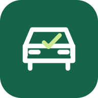

Autoknygelė telefone
Android 8.0+ · V1.03 · 1846 KBRemontai, rida, kuro sąnaudos ir aptarnavimo priminimai.
Paruošiamas ir tikrinamas APK failas…
Atsisiųsti APKPrisijungti su ChatGPTĮdiegimas telefone
1. Paspauskite „Atsisiųsti APK“.
2. Atidarykite atsisiųstą failą.
3. Telefonui paprašius, leiskite diegti ir pasirinkite „Atnaujinti“ (senos programėlės netrinkite).
4. Priminimus įjunkite programėlės nustatymuose.
1. Paspauskite „Atsisiųsti APK“.
2. Atidarykite atsisiųstą failą.
3. Telefonui paprašius, leiskite diegti ir pasirinkite „Atnaujinti“ (senos programėlės netrinkite).
4. Priminimus įjunkite programėlės nustatymuose.
Jei QR atsidarė skaitytuvo viduje, pasirinkite „Atidaryti naršyklėje“ ir naudokite Chrome.
Oficialūs Autoknygelės Android leidimai.
Atidaryti automobilio knygelę